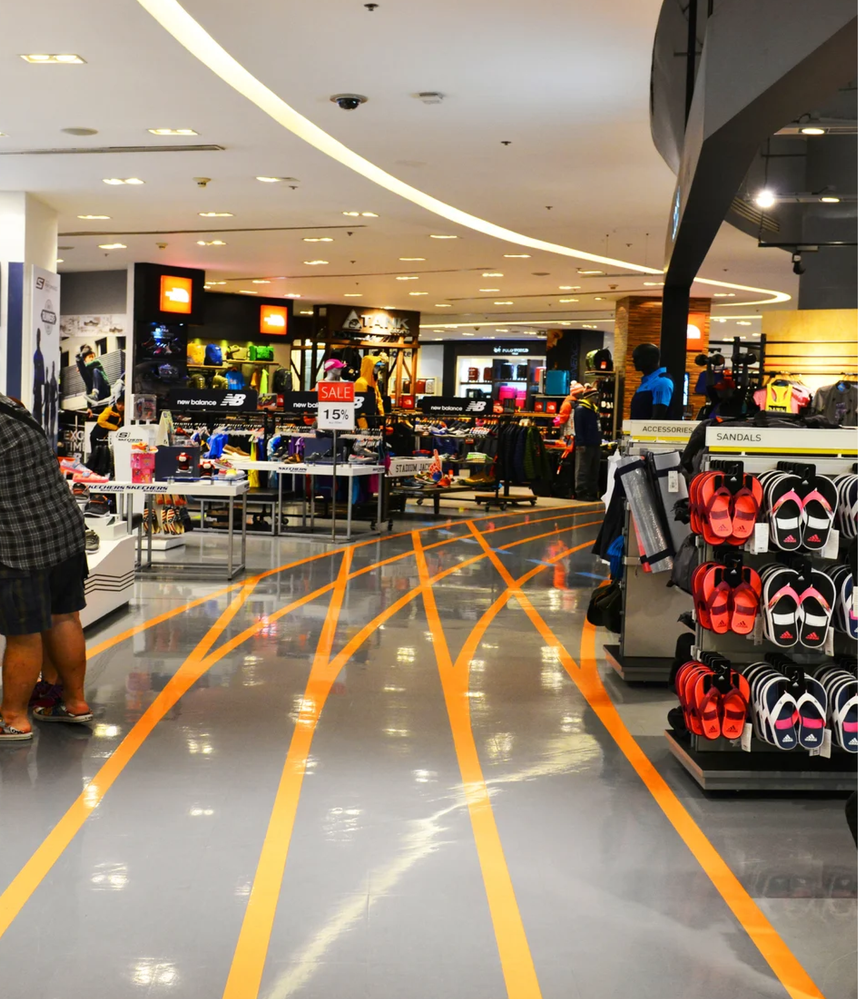
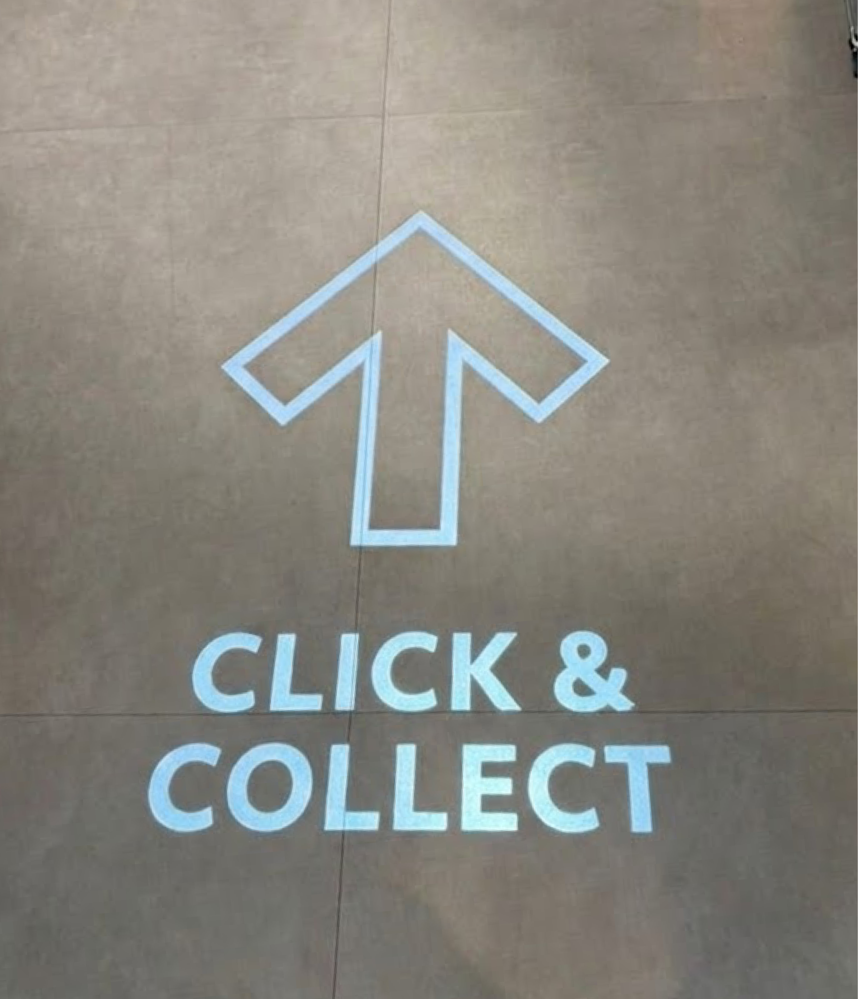

Decathlon
Un projet ancré dans la réalité du terrain
Dans le cadre d'un partenariat pédagogique, nous avons collaboré avec le Decathlon City du centre-ville de Nantes. L'objectif était de répondre à une problématique réelle posée par le magasin, en intervenant directement sur le terrain.
En équipe de 5 étudiants designers, nous avons pris en charge l'intégralité du processus de recherche : de la conception du protocole d'observation jusqu'à la restitution des solutions auprès du client.
Comment faire émerger ce qui reste invisible ?
" Comment optimiser le parcours client pour garantir l'attractivité de chaque zone de vente au sein d'un Decathlon City ? "
Le magasin avait identifié trois points d'attention prioritaires : la caisse automatique, le processus Click & Collect (dont une partie restait invisible), et l'identification des zones chaudes et froides du magasin.
Ce que le magasin devait résoudre
Zones chaudes & froides
Identifier les espaces qui attirent naturellement et ceux qui restent délaissés.
Click & Collect invisible
Un service mal signalé, sans guidage ni repères visuels.
Caisse automatique
Accompagner l'adoption par les clients face aux habitudes établies.
Attractivité globale
Générer de l'intérêt dans chaque zone en espace réduit.
Observer avant de concevoir
Protocole d'observation
Deux sessions de 3 heures sur le terrain. Le magasin a été découpé en plusieurs zones, chacune surveillée pour récolter les comportements récurrents.
Collecte de comportements
Identifier les frictions : hésitations, demi-tours, erreurs de navigation. Au total : 6h sur place, environ 150 entrées observées.
30 interviews utilisateurs
Comprendre les motivations et blocages derrière chaque friction identifiée. Voix réelle des utilisateurs.
" Le Click & Collect était invisible. Non pas parce que les clients ne savaient pas chercher — mais parce que rien ne les invitait à regarder. "
Rendre visible l'invisible
Le Click & Collect concentrait le plus de frictions : absence de guidage dès l'entrée et zone visuellement invisible. Nous avons proposé trois concepts pour rendre ce service évident.

Fil d'Ariane bleu
Tracé continu du sol pour un guidage naturel vers le fond du magasin.

Projections lumineuses
Signaux dynamiques pour capter l'attention en temps réel.

Zone 100% bleue
Espace identifiable immédiatement depuis n'importe quel point.
Ce que ce projet m'a enseigné
- — Les utilisateurs ont toujours le dernier mot : c'est l'observation qui valide ou invalide les hypothèses.
- — Un protocole doit être flexible pour s'adapter à la réalité du terrain, souvent plus complexe qu'attendu.
- — Présenter les problèmes avec des anecdotes réelles a plus d'impact qu'un simple rapport de données.